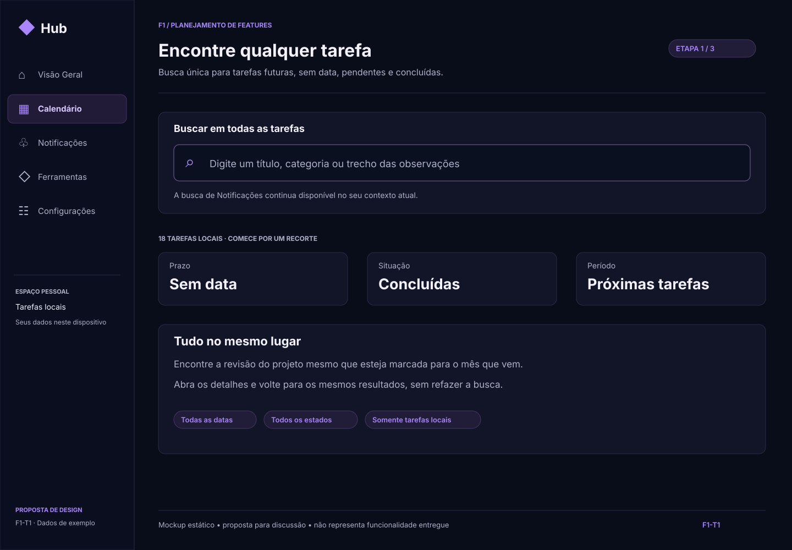F1-T1 · ETAPA 1 DE 3Encontre qualquer tarefaBusca única para tarefas futuras, sem data, pendentes e concluídas.Início do fluxoPróxima etapa →
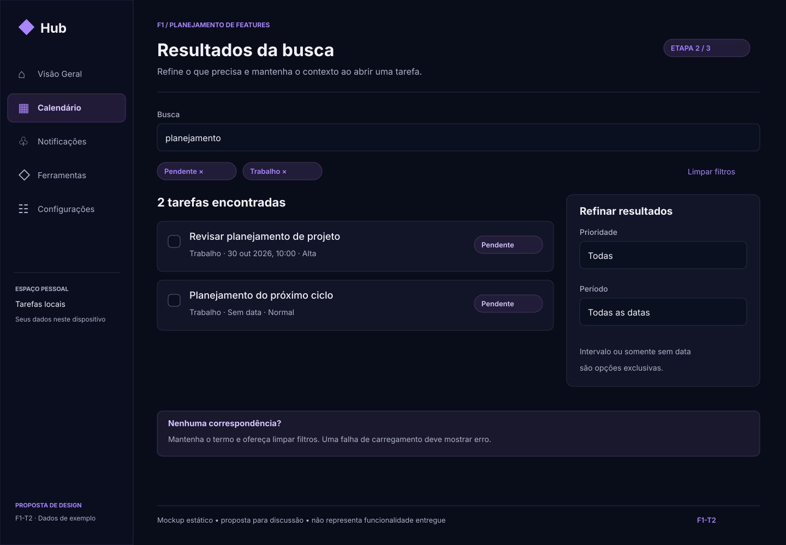F1-T2 · ETAPA 2 DE 3Resultados da buscaRefine o que precisa e mantenha o contexto ao abrir uma tarefa.← Etapa anteriorPróxima etapa →
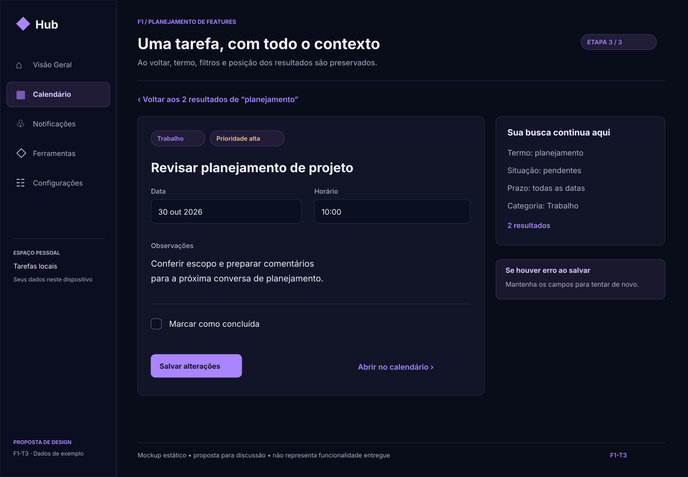F1-T3 · ETAPA 3 DE 3Uma tarefa, com todo o contextoAo voltar, termo, filtros e posição dos resultados são preservados.← Etapa anteriorVoltar ao início
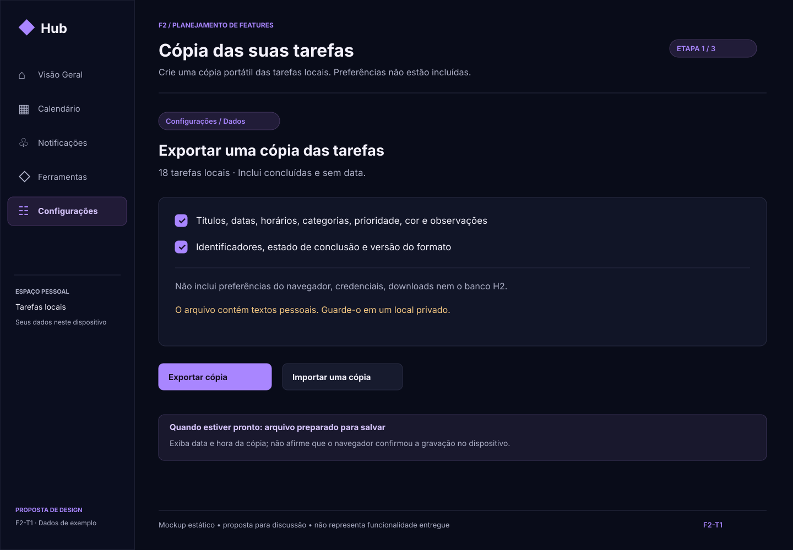F2-T1 · ETAPA 1 DE 3Cópia das suas tarefasCrie uma cópia portátil das tarefas locais. Preferências não estão incluídas.Início do fluxoPróxima etapa →
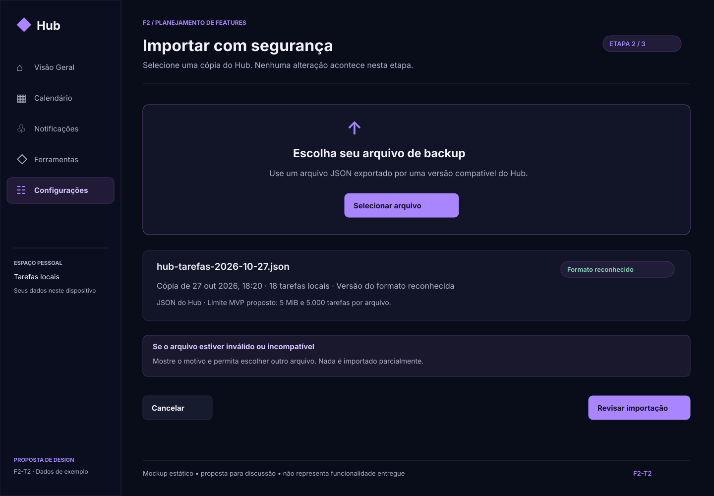F2-T2 · ETAPA 2 DE 3Importar com segurançaSelecione uma cópia do Hub. Nenhuma alteração acontece nesta etapa.← Etapa anteriorPróxima etapa →
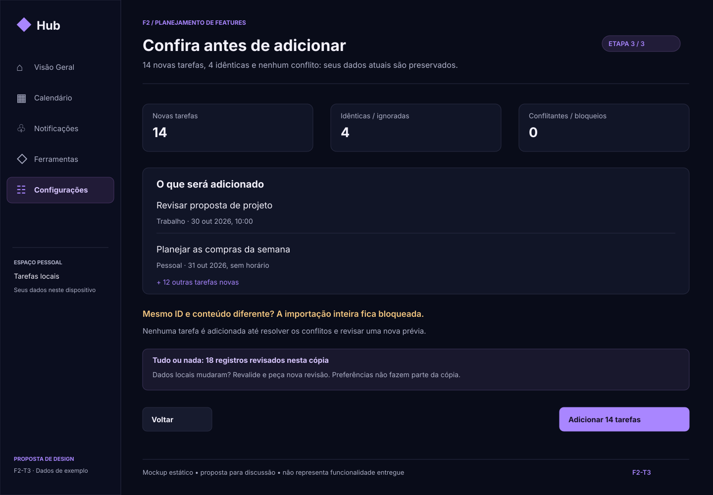F2-T3 · ETAPA 3 DE 3Confira antes de adicionar14 novas tarefas, 4 idênticas e nenhum conflito: seus dados atuais são preservados.← Etapa anteriorVoltar ao início
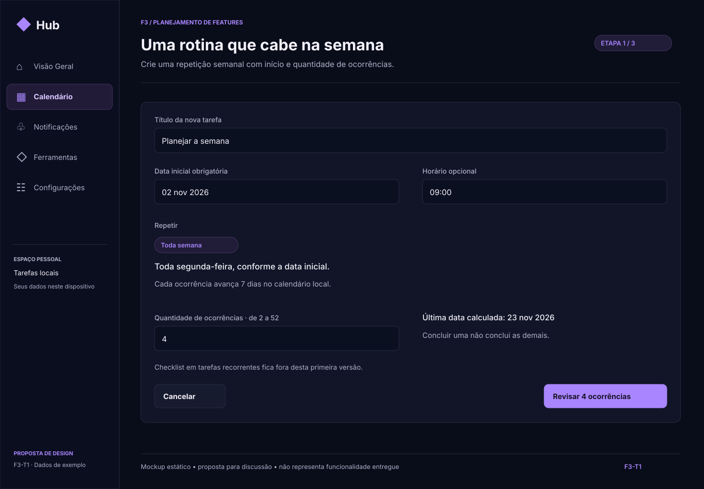F3-T1 · ETAPA 1 DE 3Uma rotina que cabe na semanaCrie uma repetição semanal com início e quantidade de ocorrências.Início do fluxoPróxima etapa →
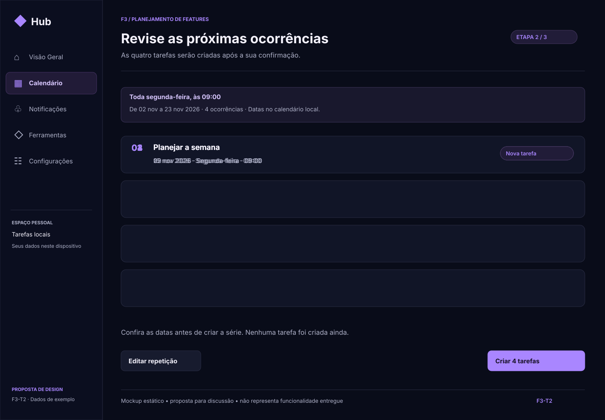F3-T2 · ETAPA 2 DE 3Revise as próximas ocorrênciasAs quatro tarefas serão criadas após a sua confirmação.← Etapa anteriorPróxima etapa →
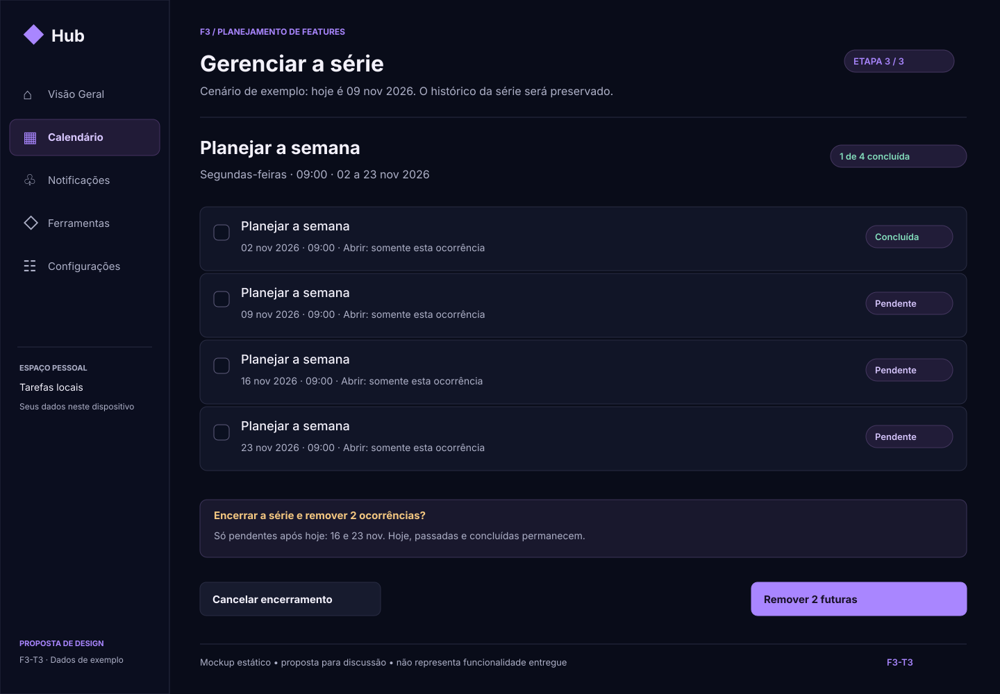F3-T3 · ETAPA 3 DE 3Gerenciar a sérieCenário de exemplo: hoje é 09 nov 2026. O histórico da série será preservado.← Etapa anteriorVoltar ao início
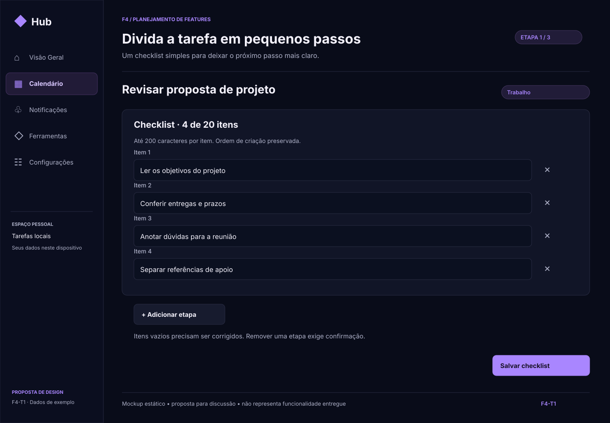F4-T1 · ETAPA 1 DE 3Divida a tarefa em pequenos passosUm checklist simples para deixar o próximo passo mais claro.Início do fluxoPróxima etapa →
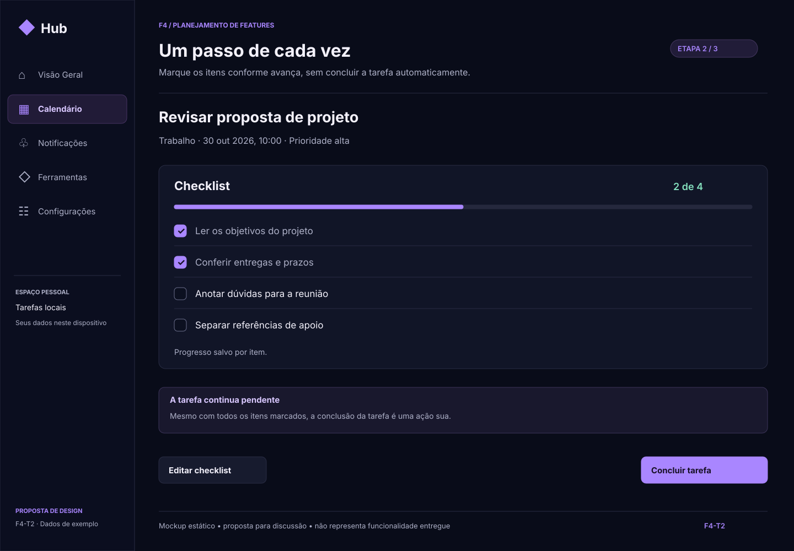F4-T2 · ETAPA 2 DE 3Um passo de cada vezMarque os itens conforme avança, sem concluir a tarefa automaticamente.← Etapa anteriorPróxima etapa →
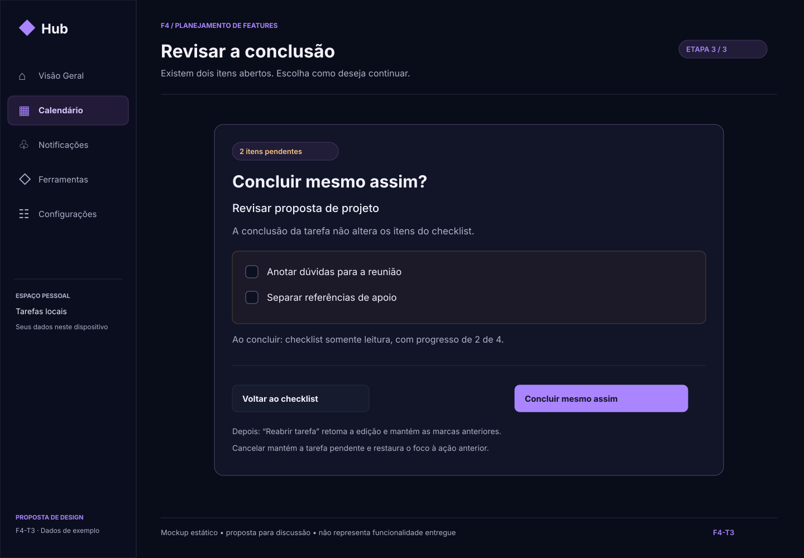F4-T3 · ETAPA 3 DE 3Revisar a conclusãoExistem dois itens abertos. Escolha como deseja continuar.← Etapa anteriorVoltar ao início